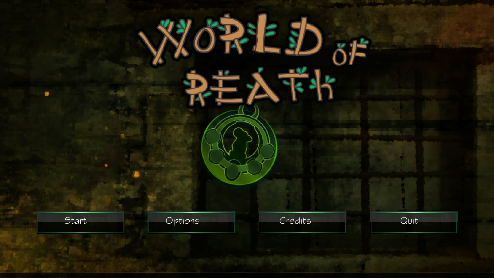

World of Reath
World of Reath is an action-adventure game about the main character Robin and his life on the planet Reath. To ensure his town's survival, he has to collect various goods during the day and bring them back to help improve his town. But during night, monsters will come out and he will have to defend himself.
Features
Day/Night Cycle
One of the aspects I contributed to greatly was UI. A great simulation game needs UI elements that balance usability and an organized method of displaying information. We had plenty of design concepts and mockups before we finally were able to create the menu windows.
Hard Mode
To ensure the production of a swift prototype, a mode which only focuses on how long the player survived was created. This was where the features of the game were developed.
Health
A life bar for both Robin and the enemy he was attacking were included in the game. It is a way for the player to receive more feedback from the game. Once an enemy’s health is depleted, the enemy is destroyed, while if Robin’s hit points reach zero, the game ends. Once an enemy is defeated, it will drop an apple for Robin to eat. This fills a portion of Robin’s health and is the only way to get more health.
Final Thoughts
World of Reath was one of my first projects in collaboration with other students. I learned most of Unity's scripting API through this game. My team members and I worked hard to get this developed in our critically short development time. There are no plans to continue this develop this game any further.